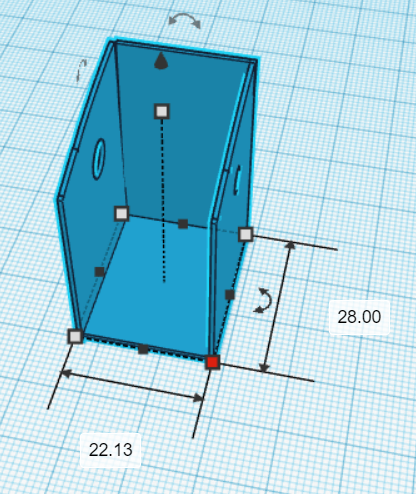
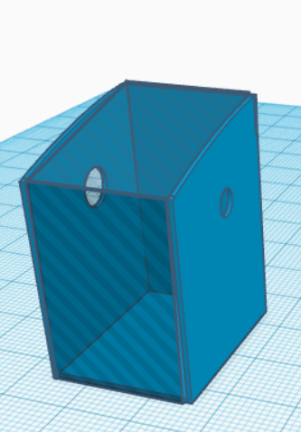

MÁY TRỢ THỞ VÀ TẠO OXI TẠI NHÀ - HIỆU QUẢ, AN TOÀN, TIỆN LỢI
Theo CNN, đến giữa tháng 6/2020 cả thế giới có 8.6 triệu người nhiễm Covid – 19 và vẫn tiếp tục tăng nhanh, bệnh dịch đã lan ra hầu hết các nước trên thế giới. Với số lượng bệnh nhân tăng đột biến đã đặt gánh nặng lên hệ thống y tế của các quốc gia. Chính phủ các nước đang khẩn trương chuẩn bị bị các trang thiết bị y tế để sẵn sàng đối phó với dịch bệnh trong đó có máy thở.
Máy trợ thở và tạo oxi tại nhà giúp bệnh nhân có thể dễ dàng được cứu chữa trong trường hợp không thể đến bệnh viện hay quá nguy kịch. Với giá cả thấp và cách thiết lập đơn giản, máy trợ thở và tạo oxi tại nhà chính là một sự lựa chọn đúng đắn cho bạn!
MỤC LỤC
MÁY TRỢ THỞ
NGUYÊN LÝ HOẠT ĐỘNG
Nguyên tắc bóp bóng của máy trợ thở: sử dụng nguyên tắc đòn bẩy để làm cánh tay đòn đẩy vật
Vì đòn bẩy có thể được sử dụng để gây ra một lượng lớn lực lên trên một khoảng cách nhỏ ở một đầu bằng cách tác dụng một lực nhỏ trên một khoảng các lớn hơn ở đầu kia.
Một sợi dây sẽ được nối với cánh tay đòn và động cơ servo. Động cơ servo sẽ xoay một chu kì nhất định làm cánh tay đòn chuyển động theo trục cố định trên máy và bóp bóng.
NGUYÊN LIỆU LẮP ĐẶT
CÁCH CHẾ TẠO
Mô hình máy trợ thở:
 MÁY TẠO OXI
NGUYÊN LÝ HOẠT ĐỘNG
Máy tạo oxi sử dụng Nguyên lý điện phân nước.
-Nếu cho dòng điện một chiều đi qua dung dịch chất điện li, thì các tiểu phân tích điện dương (cation) sẽ chuyển dịch về catot, còn các tiểu phân tích điện âm (anion) sẽ chuyển dịch về anot. Khi tiếp cúc với catot, các cation nhận thêm electron ở nó, nghĩa là bị khử. Ở đề tài này nghiên cứu về sự điện phân nước để thu được oxi và hidro.
Nước tinh khiết là chất không có khả năng dẫn điện, nên để điện phân nước, ta cho thêm các chất điện ly như axit, bazo hoặc một số loại muối tan thích hợp. Chất điện ly được sử dụng trong sản phẩm của đề tài là (sô đa). Ta có các quá trình xảy ra trong dung dịch điện ly như sau:
 , là những ion có hại cho quá trình điện phân, vì Ca, Mg tác dụng với kiềm tạo thành hyđrôxit khó tan , kết tủa trên màng cách , bịt kín các lỗ màng , gây cản trở quá trình điện phân. Nên khi
ta pha chế dung dịch điện phân ở bên ngoài với việc cho thêm vào nước và để lắng trước khi đổ vào bình điện phân sẽ giúp giảm thiểu tối đa sự gây hại này do phản ứng sau:
, là những ion có hại cho quá trình điện phân, vì Ca, Mg tác dụng với kiềm tạo thành hyđrôxit khó tan , kết tủa trên màng cách , bịt kín các lỗ màng , gây cản trở quá trình điện phân. Nên khi
ta pha chế dung dịch điện phân ở bên ngoài với việc cho thêm vào nước và để lắng trước khi đổ vào bình điện phân sẽ giúp giảm thiểu tối đa sự gây hại này do phản ứng sau: 
CÁCH THỰC HIỆN
Sử dụng nguồn 12V ổn định, cắm 2 cực dương và âm vào 2 điện cực ở 2 cốc chứa dung dịch điện li riêng biệt, sử dụng vôn kế để đo hiệu điện thế ở 2 cốc dung dịch (chỉ cho đầu dò chạm vào phần dung dịch, không chạm vào phần kim loại của điện cực)